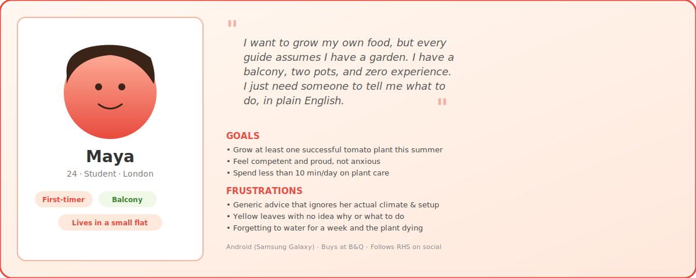
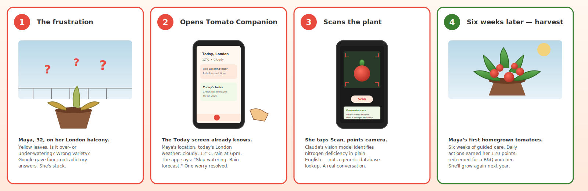
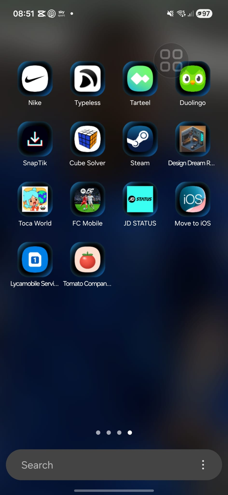
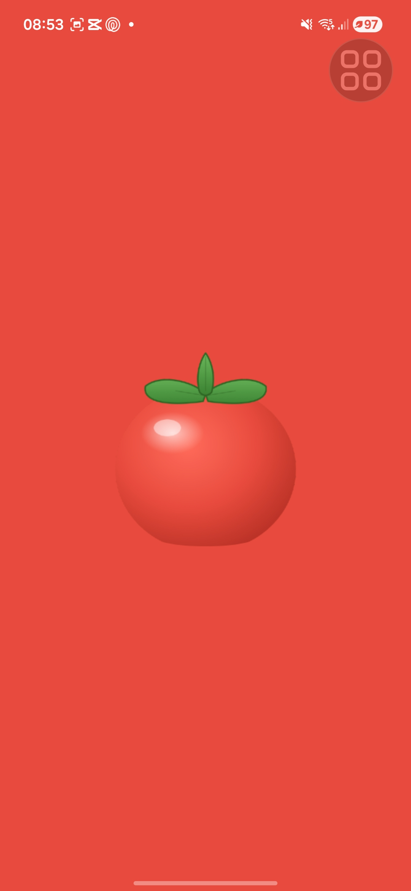
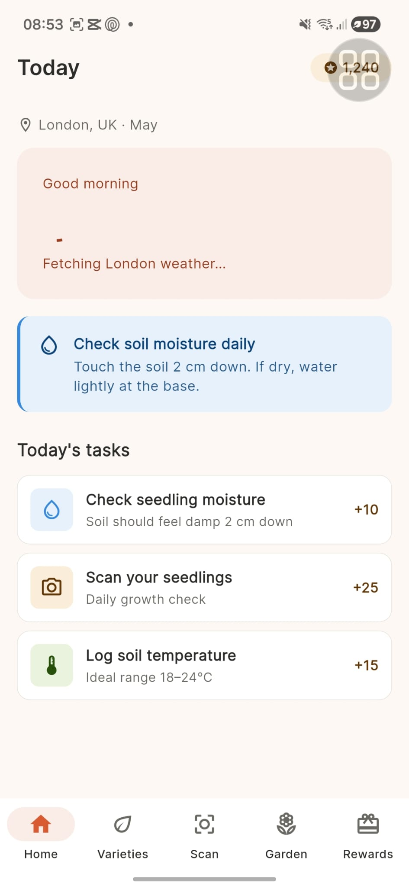
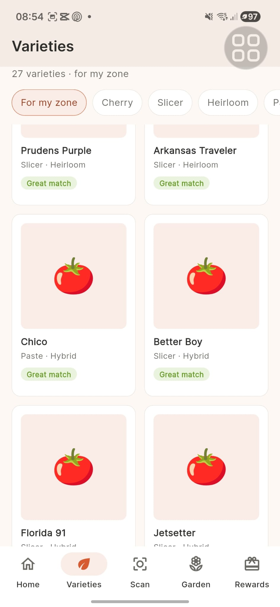
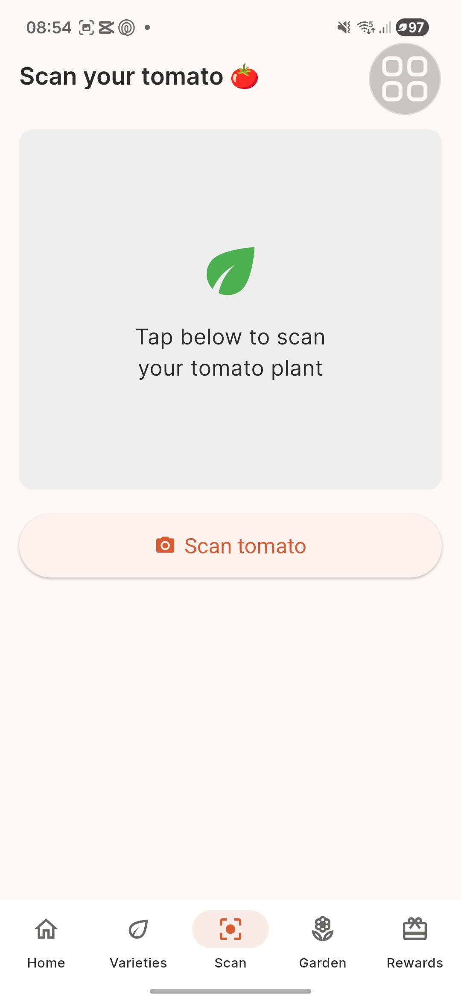
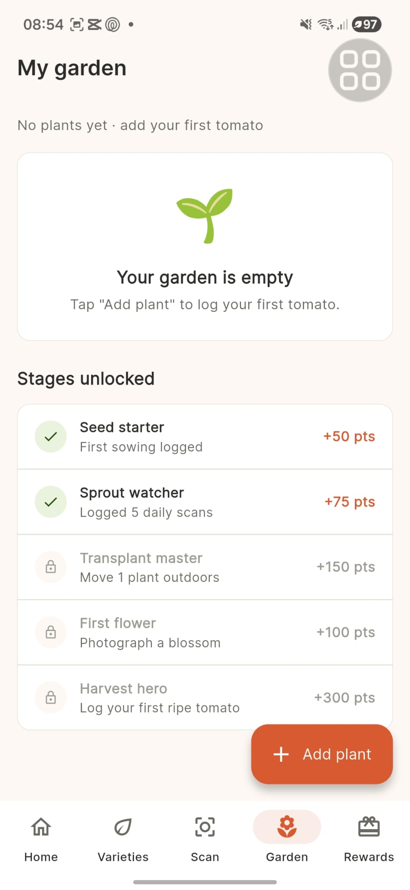
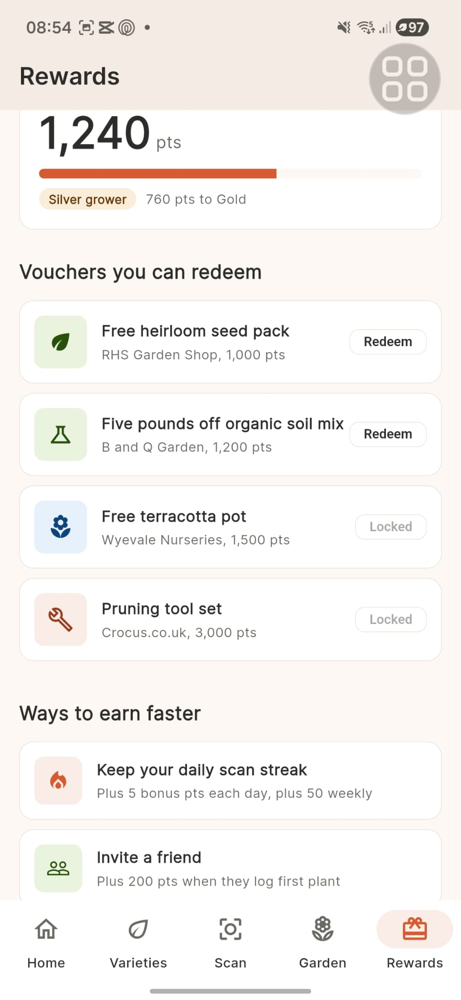

A Flutter app that turns growing tomatoes from anxious guesswork into a guided journey — with live local weather, AI plant diagnosis, and 27 curated varieties for UK growers.
Filmed on a real Samsung Galaxy A17 5G, not an emulator. Watch the Claude vision scan moment — point the camera, get a real diagnosis in seconds.
Demo · 3:41 · Samsung Galaxy A17 5G · Android 16

The app was designed around a single primary user: a 24-year-old student in a London flat with a balcony, zero experience, and zero patience for generic gardening advice.
"I want to grow my own food, but every guide assumes I have a garden. I have a balcony, two pots, and zero experience."
Every screen maps to a real moment in a grower's day. No feature without a reason.
The Today screen reads your location, pulls live weather from Open-Meteo, and tells you exactly what to do today. Water? Skip? Worry about frost? It knows.
Tap Scan, point your camera. Claude's vision model identifies the problem — nitrogen deficiency, pests, ripeness — and answers like a knowledgeable friend, not a database.
Your garden tracks every plant from seedling through harvest. Daily actions earn points that redeem at real partners — B&Q, RHS, and more.
The storyboard the app was designed around — four panels capturing the emotional arc from "stuck and stressed" to "competent and proud".

Every screenshot below is from a Samsung Galaxy A17 5G running the production build. No mockups, no emulator.

Bespoke 🍅 icon, "Tomato Companion" label

Brand-aligned splash on every cold launch

Live weather, contextual advice, today's tasks

UK-friendly selection with Hero animations

Real Claude vision, plain English diagnosis

Per-plant tracking, seedling → harvest

Points redeem at B&Q, RHS, partner brands
Every technology in this app earns its place. No frameworks for the sake of frameworks — each choice is justified by what it lets the app do.
Single codebase, native performance, Material 3 design — Android and iOS from one Dart project.
Vision API that returns advice, not labels. The conversational tone matches the companion voice of the app.
Free weather API with excellent UK forecast accuracy. No commercial dependencies, no rate-limit anxiety.
Cross-device garden sync without standing up a backend. Sign in once, your plants follow you.
Native location services that power the connected-environment story — weather where you actually are.
Hero animations between Varieties → Detail. Staggered list transitions. Native feel on every Android.
The full source code, design documentation, UX testing, and architecture decisions are open on GitHub.